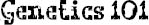

BOTH SIDES OF Dad’s family were Jews from Russia and Poland. Poppa’s grandparents fled the pogroms and ended up in NYC at the turn of the century. Tata’s parents fled the Nazis and ended up in Argentina in the forties. Poppa and Tata met at a dance on the Lower East Side while she was in town visiting a cousin. They got married, moved to Bayside, and had Dad and Uncle Ben.
Mom’s side of the family is from Brazil. Except for her mother, my beautiful Grans, and her dad, Agosto, who died before I was born, the rest of Mom’s family—all her glamorous aunts, uncles, and cousins—still live in Alto Leblon, a ritzy suburb south of Rio. Grans and Agosto moved to Boston in the early sixties, and had Mom and Aunt Kate, who’s married to Uncle Porter.
Mom and Dad met at Brown University and have been together ever since. Isabel and Nate: like two peas in a pod. They moved to New York right after college, had me a few years later, then moved to a brick townhouse in North River Heights, the hippie-stroller capital of upper upper Manhattan, when I was about a year old.
Not one person in the exotic mix of my family gene pool has ever shown any obvious signs of having what August has. I’ve pored over grainy sepia pictures of long-dead relatives in babushkas; black-and-white snapshots of distant cousins in crisp white linen suits, soldiers in uniform, ladies with beehive hairdos; Polaroids of bell-bottomed teenagers and long-haired hippies, and not once have I been able to detect even the slightest trace of August’s face in their faces. Not a one. But after August was born, my parents underwent genetic counseling. They were told that August had what seemed to be a “previously unknown type of mandibulofacial dysostosis caused by an autosomal recessive mutation in the TCOF1 gene, which is located on chromosome 5, complicated by a hemifacial microsomia characteristic of OAV spectrum.” Sometimes these mutations occur during pregnancy. Sometimes they’re inherited from one parent carrying the dominant gene. Sometimes they’re caused by the interaction of many genes, possibly in combination with environmental factors. This is called multifactorial inheritance. In August’s case, the doctors were able to identify one of the “single nucleotide deletion mutations” that made war on his face. The weird thing is, though you’d never know it from looking at them: both my parents carry that mutant gene.
And I carry it, too.